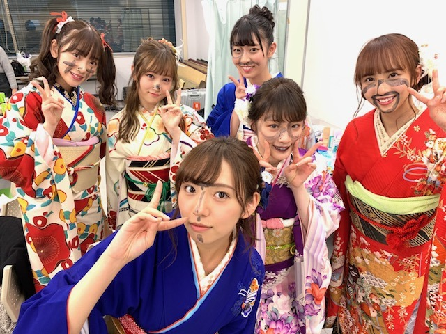
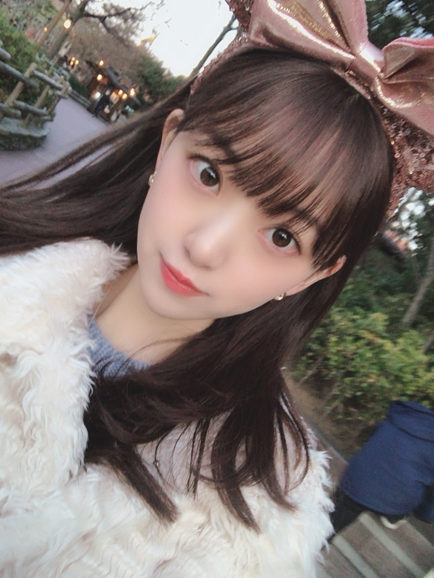
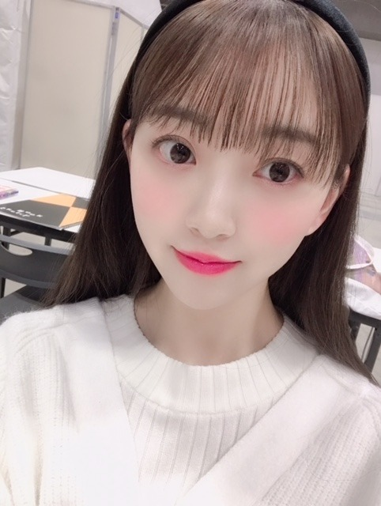

2019/0123Wed今日のこと
今日は
17:30〜のぎおびshowroom配信
23:45〜文化放送レコメンです✨✨
#レコメン女心 つぶやいてね
よろしくです o(^-^)o
だいたいぜんぶ展のパーカー☺︎
Lサイズでだぼっと着ました。
白は今は売り切れみたいですが
黒を着たらあすかとお揃いですよ〜
ぜひともぜひとも
逃げ水の個人tシャツもかわいいので
要checkです☺︎
個人的にはバレッタのタオルがすきです

乃木中見てくださいましたか？
見事に真っ黒。笑
羽子板をやるのは小さい頃以来で
楽しかったです✨


眠れる森の美女のオーロラ姫が
私の中でシンデレラと並ぶくらいに
リスペクトしているディズニープリンセスで、
オーロラ姫風の
黒カチューシャ×巻き下ろしは
最近のお気に入りへアです☺︎
フランスのユッセ城にいつか行きたいな〜って
思います
お姫様は女の子の永遠の憧れだし
いつか白馬の王子様が現れると夢見てます...
でもカメラを向けられると変顔をするあたり
まだまだですな...
ひよこ
では。
2019/01/23 16:12
コメント(354)
こんばんは。
コメント遅くなりました！
未央奈をいっっぱいみれて幸せな日だった〜！✨
お疲れ様。
のぎおびshowroomもレコメン！もみたよん♪
のぎおびは今年の抱負を言ってたね！
前向き！！！
すごく大切だと思う。未央奈らしさだね☺︎
服装も髪型もハートのイヤリングも超かわいくて最高だったよ〜！
あ、あとシャチホコもかわいかったよ？笑
レコメン！は毎回大笑いしながら聴かせてもらってます。笑
"〜ごっこ"シリーズはラジオだけどどんな表情でセリフを言ってるのか想像して聴いてたら、のりさんの顔が思い浮かんでさらに笑っちゃったよ。
レコメン女心もよきよき。o(^-^)o
あ、あとザンビもさっきhuluで2話連続で観たよ！未央奈が言ってたように乃木坂メンバーが出演してるからそこまで怖いって思わないで観れる〜ありがとっ！✌️
だいたいぜんぶ展のパーカー！
かわいいなぁ。似合う。さすがメンバー！笑
だいたいぜんぶ展早く行きたい〜〜
逃げ水のジャケ写ポスター部屋に飾ってあるぐらい大好き！
要checkや〜〜
お、バレッタのタオル買おっと。
乃木中みたよ〜〜
そんな未央奈もかわいい。。(ファン目線)
羽子板うまかったよ！ハスキーボイスも味があったね。笑
おぉー、オーロラ姫風の髪型だったのかぁ。
写真をずっと見ていられるぐらいかわいい☺︎
おっとっと、、まずは王子様になるところから努力しようかな。笑
笑った。
大好きだよ。変顔♪
これから！これから！
前向きに！！
台北でのライブがんばってね！応援してる。
おやすみおな〜〜(^-^)
コメント遅くなりました！
未央奈をいっっぱいみれて幸せな日だった〜！✨
お疲れ様。
のぎおびshowroomもレコメン！もみたよん♪
のぎおびは今年の抱負を言ってたね！
前向き！！！
すごく大切だと思う。未央奈らしさだね☺︎
服装も髪型もハートのイヤリングも超かわいくて最高だったよ〜！
あ、あとシャチホコもかわいかったよ？笑
レコメン！は毎回大笑いしながら聴かせてもらってます。笑
"〜ごっこ"シリーズはラジオだけどどんな表情でセリフを言ってるのか想像して聴いてたら、のりさんの顔が思い浮かんでさらに笑っちゃったよ。
レコメン女心もよきよき。o(^-^)o
あ、あとザンビもさっきhuluで2話連続で観たよ！未央奈が言ってたように乃木坂メンバーが出演してるからそこまで怖いって思わないで観れる〜ありがとっ！✌️
だいたいぜんぶ展のパーカー！
かわいいなぁ。似合う。さすがメンバー！笑
だいたいぜんぶ展早く行きたい〜〜
逃げ水のジャケ写ポスター部屋に飾ってあるぐらい大好き！
要checkや〜〜
お、バレッタのタオル買おっと。
乃木中みたよ〜〜
そんな未央奈もかわいい。。(ファン目線)
羽子板うまかったよ！ハスキーボイスも味があったね。笑
おぉー、オーロラ姫風の髪型だったのかぁ。
写真をずっと見ていられるぐらいかわいい☺︎
おっとっと、、まずは王子様になるところから努力しようかな。笑
笑った。
大好きだよ。変顔♪
これから！これから！
前向きに！！
台北でのライブがんばってね！応援してる。
おやすみおな〜〜(^-^)
みおなー
いつも岐阜から応援してます！
いつも岐阜から応援してます！
堀さん、こんばんは。美人は白が似合いますね。
3枚目の正統派美人な感じと4枚目の柔らかい表情が好きです。
最後の写真の「まだまだですな」で「ひよこ」の真似というのは、ひよっこ的な意味でしょうか。早くニワトリの真似が出来ると良いですね。
で、ザンビ見ましたよ。CM前後のが怖くていいですね。hulu版だと急に2連続でアレ流れるのでしょうか。
今後の展開も気になりますし、短期間での堀さんの急成長を毎週きちんと追いたいと思います。細かい所だと寺に入ろうとして靴脱ぐときの柱に手を置く仕草が綺麗で良かったです。
あとザンビだからダジャレで３年Ｂ組にしてるかと予想してたんですけど外れました。
あとshowroomも見ました。
”前向き”良いですね。それこそ御の字を付けたいほどの堀さんの代名詞です。自己啓発本も、アイドルや何かを続けたい人達の為に本当に書いて欲しいです。
ちなみに僕の思う堀さんの好きな所は、顔や指先や背筋や立ち姿や着物姿や髪の揺れや所作が美しい所、ブログ755モバメ更新してくれてファンを喜ばせようとする所、ネガティブな時も有るのに自身や周りを前向きにして前へ進んでいく所、です。
では、台北ライブ頑張って盛り上げてきてくださいね。
3枚目の正統派美人な感じと4枚目の柔らかい表情が好きです。
最後の写真の「まだまだですな」で「ひよこ」の真似というのは、ひよっこ的な意味でしょうか。早くニワトリの真似が出来ると良いですね。
で、ザンビ見ましたよ。CM前後のが怖くていいですね。hulu版だと急に2連続でアレ流れるのでしょうか。
今後の展開も気になりますし、短期間での堀さんの急成長を毎週きちんと追いたいと思います。細かい所だと寺に入ろうとして靴脱ぐときの柱に手を置く仕草が綺麗で良かったです。
あとザンビだからダジャレで３年Ｂ組にしてるかと予想してたんですけど外れました。
あとshowroomも見ました。
”前向き”良いですね。それこそ御の字を付けたいほどの堀さんの代名詞です。自己啓発本も、アイドルや何かを続けたい人達の為に本当に書いて欲しいです。
ちなみに僕の思う堀さんの好きな所は、顔や指先や背筋や立ち姿や着物姿や髪の揺れや所作が美しい所、ブログ755モバメ更新してくれてファンを喜ばせようとする所、ネガティブな時も有るのに自身や周りを前向きにして前へ進んでいく所、です。
では、台北ライブ頑張って盛り上げてきてくださいね。
レコメン堀殿聴きました～赤だし×トンカツあむあむあむ⊂(ο･㉨･ο）⊃”くまﾃﾞｽ…
ドラマ「ザンビ」HULUで第2話まで観ました⊂(ο･㉨･ο）⊃”くまﾃﾞｽ…
実乃梨役の殿堀発見ﾜﾝ (･x･U)≡≡≡３ ドキドキとまらんぜでばいころまるロンo(^-^o)(o^-^)oロンo(^-^o)(o^-^)oロン
ドラマ「ザンビ」HULUで第2話まで観ました⊂(ο･㉨･ο）⊃”くまﾃﾞｽ…
実乃梨役の殿堀発見ﾜﾝ (･x･U)≡≡≡３ ドキドキとまらんぜでばいころまるロンo(^-^o)(o^-^)oロンo(^-^o)(o^-^)oロン
未央奈ちゃん、おはよう。
のぎおび見たけど、とっても可愛いかった。
ザンビは怖いような面白いような、今後の展開がどうなるのかワクワク感がいっぱいです。
週末は台北ライブ、最高のパフォーマンスで楽しんでください、東京から応援しています。
インフルエンザが流行ってますが、良い体調で過ごしてくださいね。
乃木坂46と頑張ってるcuteでsmartな未央奈ちゃんを応援しています。
のぎおび見たけど、とっても可愛いかった。
ザンビは怖いような面白いような、今後の展開がどうなるのかワクワク感がいっぱいです。
週末は台北ライブ、最高のパフォーマンスで楽しんでください、東京から応援しています。
インフルエンザが流行ってますが、良い体調で過ごしてくださいね。
乃木坂46と頑張ってるcuteでsmartな未央奈ちゃんを応援しています。
箸君ネタを思いついたよ。
箸君箸君 箱根駅伝に出たらいいのに。
ナゼって。と袋を取り出して
箱根駅伝は復路が大切です。
復路とわり箸の袋をかけてみました。
箸君箸君 箱根駅伝に出たらいいのに。
ナゼって。と袋を取り出して
箱根駅伝は復路が大切です。
復路とわり箸の袋をかけてみました。
今日楽しみにしてます！
ハァ〜未央奈めっかわだよ
台湾ライブがんばってねーー！！
ブログ更新ありがとう〜
そろそろホットギミック楽しみになってきた！
そろそろホットギミック楽しみになってきた！
かわいい❤️
カチーユシヤとても似合ってますね、品のある、お嬢様ですね、堀さんの行くところには、いつも陽がさします。堀さんの笑顔が太陽なんです。堀さんの思いやりのある言葉が太陽なんですから、どこに行っても大丈夫です。明るくてあたたかい堀さんは太陽の女神様です。
コメント遅くなってしまったー
逃げ水の未央奈のTシャツで握手会行ったのに、触れてくれなくて残念だったよー
次も着ていくから、触れてください！
ドラマや台湾で大変だろうけど、インフルとかに気をつけて頑張ってねー
逃げ水の未央奈のTシャツで握手会行ったのに、触れてくれなくて残念だったよー
次も着ていくから、触れてください！
ドラマや台湾で大変だろうけど、インフルとかに気をつけて頑張ってねー
未央奈ちゃん、ひろっしーです！コメント投稿559回目です！
前回はブログ「いちごいろ」にモバメの感想を書きました！
時間→「No.524 2019年1月23日 00:48」
ブログ更新ありがとうございます！
今回も1枚目から癒されちゃいました！
こんな可愛い女性に着て貰ったら白パーカーも嬉しいやろな～！それにしても可愛いな～(照)
「乃木中」勿論観ました！既に懐かしい(笑)
黒くなっても可愛いですが、設楽さんに眼鏡や髭も書いて欲しかったな～(笑)
最後のひよこ、こういうところ好きだな～！
髪くくった方がひよこっぽく見えるかもね！
「のぎおび」なんとか無事に観れました！
この日のポニーテールも可愛かったよ～！
ハートのイヤリングも赤いリップもお似合いで岐阜の良いところを伝える時の白川郷ポーズも凄く可愛かったです！地元が好きって良いね！
箸くんも「ホットギミック」も早く観た～い！
僕はショート派なので、宣伝期間はショートにされると知り凄く嬉しいです！
未央奈ちゃんの今年の目標は「前向き」かぁ！いやぁ、良い目標！自分だけではなく、周りの人も一緒に前向きにさせる考え方素敵ですね！また好きになっちゃったよ～！
未央奈ちゃんってスイッチウインカーですね！
曜日対決、77枚？多すぎたね(笑) ドンマイ！
ラッキーセブンのゾロ目だし、まあいっか(笑)
楓ちゃんと手羽先食べれると良いね！
久し振りの生配信ありがとうございました！
「レコメン！」お疲れ様でした！今週も可愛い声で癒してくださり、面白いトークで笑わせてくださり、カツ未央奈ちゃんありがとう！
「〇〇ごっこ」も面白いと思いますが、恐らくしている2人の笑い声を聴く方が面白いと思います！何回聴いても笑っちゃいます！
ここまで読んで頂きありがとうございました！
毎日お仕事お疲れ様です！体調にはくれぐれも気を付けて頑張ってくださいね！
おやすみおな～！
前回はブログ「いちごいろ」にモバメの感想を書きました！
時間→「No.524 2019年1月23日 00:48」
ブログ更新ありがとうございます！
今回も1枚目から癒されちゃいました！
こんな可愛い女性に着て貰ったら白パーカーも嬉しいやろな～！それにしても可愛いな～(照)
「乃木中」勿論観ました！既に懐かしい(笑)
黒くなっても可愛いですが、設楽さんに眼鏡や髭も書いて欲しかったな～(笑)
最後のひよこ、こういうところ好きだな～！
髪くくった方がひよこっぽく見えるかもね！
「のぎおび」なんとか無事に観れました！
この日のポニーテールも可愛かったよ～！
ハートのイヤリングも赤いリップもお似合いで岐阜の良いところを伝える時の白川郷ポーズも凄く可愛かったです！地元が好きって良いね！
箸くんも「ホットギミック」も早く観た～い！
僕はショート派なので、宣伝期間はショートにされると知り凄く嬉しいです！
未央奈ちゃんの今年の目標は「前向き」かぁ！いやぁ、良い目標！自分だけではなく、周りの人も一緒に前向きにさせる考え方素敵ですね！また好きになっちゃったよ～！
未央奈ちゃんってスイッチウインカーですね！
曜日対決、77枚？多すぎたね(笑) ドンマイ！
ラッキーセブンのゾロ目だし、まあいっか(笑)
楓ちゃんと手羽先食べれると良いね！
久し振りの生配信ありがとうございました！
「レコメン！」お疲れ様でした！今週も可愛い声で癒してくださり、面白いトークで笑わせてくださり、カツ未央奈ちゃんありがとう！
「〇〇ごっこ」も面白いと思いますが、恐らくしている2人の笑い声を聴く方が面白いと思います！何回聴いても笑っちゃいます！
ここまで読んで頂きありがとうございました！
毎日お仕事お疲れ様です！体調にはくれぐれも気を付けて頑張ってくださいね！
おやすみおな～！
みおちゃん、なんでそんなにかわいいの？
説明して！！
説明して！！
ドラマ「トクサツガガガ」観ておりまふσ(´∀`●)ｱﾀｼ ♡
きらりん☆堀殿きゃわわうれぴーぽーo(￣◎￣)o ﾊﾞﾌﾞｩ♡
きらりん☆堀殿きゃわわうれぴーぽーo(￣◎￣)o ﾊﾞﾌﾞｩ♡
ʕ•̫͡•ʕ•̫͡•ʔ•̫͡•ʔ•̫͡•ʕ•̫͡•ʔ•̫͡•ʕ•̫͡•ʕ•̫͡•ʔ•̫͡•ʔ•̫͡•ʕ•̫͡•ʔ•̫͡•ʔ
みおな〜
2期生の頑張りがすごいね
きいちゃんも写真集凄かったし( ˊ̱˂˃ˋ̱ )
パーカーはぜひ白黒揃えたいなw
罰ポイントロケは誰になるんだろうか
ザンビも見てます
乃木坂に癒される日々❤️❤️❤️❤️
これからも頑張ってね
ʕ•̫͡•ʕ•̫͡•ʔ•̫͡•ʔ•̫͡•ʕ•̫͡•ʔ•̫͡•ʕ•̫͡•ʕ•̫͡•ʔ•̫͡•ʔ•̫͡•ʕ•̫͡•ʔ•̫͡•ʔ
みおな〜
2期生の頑張りがすごいね
きいちゃんも写真集凄かったし( ˊ̱˂˃ˋ̱ )
パーカーはぜひ白黒揃えたいなw
罰ポイントロケは誰になるんだろうか
ザンビも見てます
乃木坂に癒される日々❤️❤️❤️❤️
これからも頑張ってね
ʕ•̫͡•ʕ•̫͡•ʔ•̫͡•ʔ•̫͡•ʕ•̫͡•ʔ•̫͡•ʕ•̫͡•ʕ•̫͡•ʔ•̫͡•ʔ•̫͡•ʕ•̫͡•ʔ•̫͡•ʔ
堀ちゃん、大好きだよー
みおなちゃん、こんにちは！
だいたい全部展のグッズどれも可愛いよね!
早く見に行きたいな〜(*´`)
明日からもfight!!
だいたい全部展のグッズどれも可愛いよね!
早く見に行きたいな〜(*´`)
明日からもfight!!
飛鳥とお揃いにしちゃっていーの？
ほんとは白が入荷するの待って未央奈とお揃いにしてほしいんでしょ？笑
いつも応援してます！！
ほんとは白が入荷するの待って未央奈とお揃いにしてほしいんでしょ？笑
いつも応援してます！！
名古屋の個握いきます。最近ロングで明るい髪のみおなさんめっちゃ可愛いので私服とともにめっちゃ楽しみにしてます。
どうもかずです。
女子がパーカーをダボっと着てるの好きです。
なんかわ(*‘ω‘ *)
乃木中毎週観てます。
盛り上がってましたね！
楽しんでるのを見るのが楽しいです(*^^*)
女子がパーカーをダボっと着てるの好きです。
なんかわ(*‘ω‘ *)
乃木中毎週観てます。
盛り上がってましたね！
楽しんでるのを見るのが楽しいです(*^^*)
がんばれー
おでこったんぐうかわでうれぴーぽーo(￣◎￣)o ﾊﾞﾌﾞｩ♡
M-ONで乃木坂46meets.asia!上海ライブ♪観ました⊂(ο･㉨･ο）⊃”くまﾃﾞｽ… 堀殿発見ﾜﾝ (･x･U)≡≡≡３ ぼぶったん♡セーラー服♡よきよきピーナッツヾ(=ﾟ･ﾟ=)ﾉﾆｬﾝ♪山下殿×与田殿のお買い物コーナー♡傘♡小籠包♡中国茶♡未来お手紙♡も面白かったでふ(笑)d(・(ェ)・d)☆very good☆(b・(ェ)・)b
M-ONで乃木坂46meets.asia!上海ライブ♪観ました⊂(ο･㉨･ο）⊃”くまﾃﾞｽ… 堀殿発見ﾜﾝ (･x･U)≡≡≡３ ぼぶったん♡セーラー服♡よきよきピーナッツヾ(=ﾟ･ﾟ=)ﾉﾆｬﾝ♪山下殿×与田殿のお買い物コーナー♡傘♡小籠包♡中国茶♡未来お手紙♡も面白かったでふ(笑)d(・(ェ)・d)☆very good☆(b・(ェ)・)b
変顔かわいい！！
大坂なおみ、優勝！しましたね。
堀未央奈
Naomi Osaka
逆から読んでも名前になる名前って珍しいと思う。
こんにちは！
現地に無事に到着して一安心しましたよ～
動画等でも姿が見られて嬉しかったです♡
ぜんぶ展パーカーは男女兼用が魅力的です！
未央ちゃんの白色に可愛いさで負けるから、
自分は黒色の方が良いかもしれませんね～♪
それに、お鮨を食べて醤油をこぼしても、
黒色の方が気にならないなと思いました～笑
今日は台北ライブいっぱい楽しんでねー☺
現地に無事に到着して一安心しましたよ～
動画等でも姿が見られて嬉しかったです♡
ぜんぶ展パーカーは男女兼用が魅力的です！
未央ちゃんの白色に可愛いさで負けるから、
自分は黒色の方が良いかもしれませんね～♪
それに、お鮨を食べて醤油をこぼしても、
黒色の方が気にならないなと思いました～笑
今日は台北ライブいっぱい楽しんでねー☺
堀ちゃん、大好きだよー
今日、乃木のの、聴きました
だいたい全部展行きたい〜
行った時に白パーカーあったら買ってこよ〜
行った時に白パーカーあったら買ってこよ〜
堀ちゃんこんばんは！
今は台北にいらっしゃいますよね、ライブお疲れ様でした(o^^o)♩
堀ちゃんが日本にいないと思うと少し寂しいです、堀ちゃんのお帰りをプティくんとニコルくんと僕たちが待ってます( ´ ▽ ` )笑
またブログやレコメン!などでお話し聞かせてくださいー！(o^^o)
今週はのぎおびを見られなかったのが悔しいのと、ファンとして恥ずかしいの想いです…( ´ 〜 ` )
レコメン!はしっかり聴かせていただきました！今週も癒された〜( ´ ▽ ` )♩
堀ちゃんはめちゃくちゃ可愛くてめちゃくちゃ大好きなので、いつ見てもテンションが上がるんですが、
一方で、なんだかホッと安心するような可愛さと好きさもあるんです( ´ ▽ ` )
ちょっと何言ってるか分からないかもしれませんが、僕の言葉で表現できる限界です笑
とにかく、堀ちゃんを見ると嬉しく楽しくなって、ホッとして癒される、静と動の両方の幸せを同時に感じられる、そんな感覚です！
自分でもまとまってない表現だなぁと思いますが、もし伝わった嬉しいです笑
そしてそして、だいたいぜんぶ展！
行けるのはおそらく2月頃ですが、早く行きたくてたまりませんー！( ´ ▽ ` )
パーカー買います！「堀ちゃんとお揃い」という言葉が魅力的すぎるので、絶対に白を買います！
行ったとき売り切れだったら、ほんとにもう一回行きます！笑
盛りだくさんという噂を聞いているので、今から楽しみです(o^^o)♩
ではでは、お帰りを待ちわびてますね！
ザイジェーン( ´ ▽ ` )♩
今は台北にいらっしゃいますよね、ライブお疲れ様でした(o^^o)♩
堀ちゃんが日本にいないと思うと少し寂しいです、堀ちゃんのお帰りをプティくんとニコルくんと僕たちが待ってます( ´ ▽ ` )笑
またブログやレコメン!などでお話し聞かせてくださいー！(o^^o)
今週はのぎおびを見られなかったのが悔しいのと、ファンとして恥ずかしいの想いです…( ´ 〜 ` )
レコメン!はしっかり聴かせていただきました！今週も癒された〜( ´ ▽ ` )♩
堀ちゃんはめちゃくちゃ可愛くてめちゃくちゃ大好きなので、いつ見てもテンションが上がるんですが、
一方で、なんだかホッと安心するような可愛さと好きさもあるんです( ´ ▽ ` )
ちょっと何言ってるか分からないかもしれませんが、僕の言葉で表現できる限界です笑
とにかく、堀ちゃんを見ると嬉しく楽しくなって、ホッとして癒される、静と動の両方の幸せを同時に感じられる、そんな感覚です！
自分でもまとまってない表現だなぁと思いますが、もし伝わった嬉しいです笑
そしてそして、だいたいぜんぶ展！
行けるのはおそらく2月頃ですが、早く行きたくてたまりませんー！( ´ ▽ ` )
パーカー買います！「堀ちゃんとお揃い」という言葉が魅力的すぎるので、絶対に白を買います！
行ったとき売り切れだったら、ほんとにもう一回行きます！笑
盛りだくさんという噂を聞いているので、今から楽しみです(o^^o)♩
ではでは、お帰りを待ちわびてますね！
ザイジェーン( ´ ▽ ` )♩
乃木坂工事中&乃木坂46SHOW!&乃木えいご観ました⊂(ο･㉨･ο）⊃”くまﾃﾞｽ…
「帰り道は遠回りしたくなる」堀殿発見ﾜﾝ (･x･U)≡≡≡３ 豫園商城いいとこ～ヾ(=ﾟ･ﾟ=)ﾉﾆｬﾝ♪ ストライクセット&アーチェリー&テニス!お上手でしたq(T▽Tq)(pT▽T)p♡ジャージ堀殿きゃわわうれぴーぽーo(￣◎￣)o ﾊﾞﾌﾞｩ♡北川ちゃんのご紹介ありがとうございます。キキ役の堀殿最高!でばいころまるロンo(^-^o)(o^-^)oロンo(^-^o)(o^-^)oロン
「帰り道は遠回りしたくなる」堀殿発見ﾜﾝ (･x･U)≡≡≡３ 豫園商城いいとこ～ヾ(=ﾟ･ﾟ=)ﾉﾆｬﾝ♪ ストライクセット&アーチェリー&テニス!お上手でしたq(T▽Tq)(pT▽T)p♡ジャージ堀殿きゃわわうれぴーぽーo(￣◎￣)o ﾊﾞﾌﾞｩ♡北川ちゃんのご紹介ありがとうございます。キキ役の堀殿最高!でばいころまるロンo(^-^o)(o^-^)oロンo(^-^o)(o^-^)oロン
未央奈ちゃんおはようございます！ありがとうございます‼楽しみにしてます！頑張ります‼頑張って下さい！ありがとうございます‼楽しみにしてます‼
未央奈！(*´꒳`*)すきー。
未央奈が1番すきー。
容姿も勿論だけど、未央奈の頑張りって他メンバーの誰よりも伝わってくるんだよねー。
未央奈ファンに歳上男性が多いのはそんなところもポイントなのかなぁ。。(*´ω｀*)
未央奈が1番すきー。
容姿も勿論だけど、未央奈の頑張りって他メンバーの誰よりも伝わってくるんだよねー。
未央奈ファンに歳上男性が多いのはそんなところもポイントなのかなぁ。。(*´ω｀*)
ブログ更新ありがとう
堀ちゃん毎回可愛くなっていて羨ましい
本当に可愛いです！
堀ちゃん毎回可愛くなっていて羨ましい
本当に可愛いです！
ほっちゃんこんばんは。そして、昨日の台北ライヴお疲れ様です。動画で、たーんとぎふ見ましたよ。凄く綺麗で、輝いてたよ。岐阜県民の皆さんに愛されているのが、凄く伝わって、凄く嬉しかったです。そして、ほっちゃんの地元愛も今まで以上に伝わり、私も行って見たくなりました。ほっちゃんの今年の目標が、｢実力者になる」という凄く高い目標ですが、素晴らしい事だと思っています。やはり、目標を高く持ってその目標に頑張ってる人はやっぱり輝きが全然違うと思います。私も見習わなればないと思いました。後、レコメンで、菅井友香さんと仲良くなりたいとおしゃってなので、是非とも、二人のツーショットなどをテレビやレコメン、ブログなどで沢山見れると嬉しいです。共通点も多いので、仲良くなれると思います。ほっちゃんから岐阜へ案内してあげれる位仲良くなれるといいね。ほっちゃん大好きやおー
こんばんは
台北ライブお疲れ様でした！！
乃木坂46SHOW！の上海リポートで、
昨夜は海外ライブの臨場感を味わえました♪
乃木中での魔女の宅急便も素敵でしたよー！
久しぶりの掘劇場が見れて嬉しかったです♡
乃木えいごでもとっても大活躍でしたねー！
ジャージの着こなしも凄く格好良いですね☆
今日は、未央奈ちゃんや、、
大阪なおみさんに倣ってカツ丼食べました☺
台北ライブお疲れ様でした！！
乃木坂46SHOW！の上海リポートで、
昨夜は海外ライブの臨場感を味わえました♪
乃木中での魔女の宅急便も素敵でしたよー！
久しぶりの掘劇場が見れて嬉しかったです♡
乃木えいごでもとっても大活躍でしたねー！
ジャージの着こなしも凄く格好良いですね☆
今日は、未央奈ちゃんや、、
大阪なおみさんに倣ってカツ丼食べました☺
堀ちゃん ここ 二三日（にさんにち）寒いですね！！
↑↑ 大寒 大寒……
だいたいが 節分の頃が一番寒い！！
↑↑ 恵方巻 今年は 東北東。
インフルエンザが流行っているから、
外出後の手洗いとうがいを……(^_^)
またまた 深夜のTV録画番組 再生中 (^^♪
━━━━━━━━━━━━━━━━━━━━━━━━━━━━━━━━
CDTVスペシャル！ 年越しプレミアライブ2018→2019
2018 12/31（月） 午後11：55ー500
♪ジコチューで行こう！
ラインダンスの次、22歳の堀未央奈ちゃんが
☆★☆ かわいくウインク ☆★☆ してくれたから、
このコメント書きたくなった！！ (^。^)y-.。o○
今日も 一日 頑張ろう！！ (^_-)-☆
お元気でね！！ (^_^)v
↑↑ 大寒 大寒……
だいたいが 節分の頃が一番寒い！！
↑↑ 恵方巻 今年は 東北東。
インフルエンザが流行っているから、
外出後の手洗いとうがいを……(^_^)
またまた 深夜のTV録画番組 再生中 (^^♪
━━━━━━━━━━━━━━━━━━━━━━━━━━━━━━━━
CDTVスペシャル！ 年越しプレミアライブ2018→2019
2018 12/31（月） 午後11：55ー500
♪ジコチューで行こう！
ラインダンスの次、22歳の堀未央奈ちゃんが
☆★☆ かわいくウインク ☆★☆ してくれたから、
このコメント書きたくなった！！ (^。^)y-.。o○
今日も 一日 頑張ろう！！ (^_-)-☆
お元気でね！！ (^_^)v
未央奈ちゃんおはようございます！ありがとうございます‼楽しみにしてます‼頑張ります‼頑張って下さい！気を付けて下さい！ありがとうございます‼
台北ライブ♡おつぽよピーナッツ♡小籠包♡ｳﾋｮﾋｮﾋｮ(o_ _)o ﾄﾞﾃｯ
タピオカミルクティー♡小籠包♡うまぺろんぬよね⊂(ο･㉨･ο）⊃”くまﾃﾞｽ…
リップ堀殿♡きゃわわうれぴーぽーo(￣◎￣)o ﾊﾞﾌﾞｩ♡
タピオカミルクティー♡小籠包♡うまぺろんぬよね⊂(ο･㉨･ο）⊃”くまﾃﾞｽ…
リップ堀殿♡きゃわわうれぴーぽーo(￣◎￣)o ﾊﾞﾌﾞｩ♡
未央奈ちゃんおはようございます‼ありがとうございます！楽しみにしてます‼頑張ります‼良かったです！ありがとうございます。
ほっちゃんお疲れ様。日本Blu-ray大賞アンバサダー就任おめでとう ほっちゃんが色んな仕事いただいて、活躍してる姿を見て、自分の事以上に嬉しい ほっちゃんをはじめ、体調を崩すメンバーが多いので、よく寝るなので、体をゆっくり休ませながら頑張ってね。ほっちゃんが頑張ってる姿を見てると私達、多くの人に励みになったり、笑顔をもらっています。ありがとう ✨何もしてあげられなくて、応援するしかできなくて、ごめん ね。色んな辛い事も沢山あったと思いますが、ほっちゃんは強い意思で、乗り越えてそれを色んな方が見てくれて、今の素敵なほっちゃんがいると思います。こんなに頑張ってるほっちゃんに対して、今だに、ひどい言葉を言う人達がいます。絶対許せません。私達が守るので、ほっちゃんは気にせず、頑張ってね。ずっと応援してるから。宜しくお願いします。
未央奈さん、こんばんは。
乃木中、乃木えいご見ました。
乃木中は、4期生紹介。
帰国子女の北川さんの英語を訳す未央奈さん。
「私のメイドはパライオって名前です。」
面白かったです。
分からなくても、笑いに変えてしまうのは流石です。
英語って難しいですよね。
ジブリ愛がでちゃいましたね。
乃木えいごは、未央奈さんと和田さんが大活躍でした。
2人のお陰で楽しかったです。
未央奈さんの積極的な姿勢も好きです。
珍回答も楽しかったです。
アーチェリーで奇跡の50ポイントで逆転。やっぱりもってますね。
テニスもしっかりカゴに決めましたね。
未央奈さんいつも綺麗。目が印象的で、笑顔が優しい。
ドラマザンビも始まりましたね。未央奈さんの活躍楽しみです。
応援してます。忙しいでしょうが頑張って下さい。
乃木中、乃木えいご見ました。
乃木中は、4期生紹介。
帰国子女の北川さんの英語を訳す未央奈さん。
「私のメイドはパライオって名前です。」
面白かったです。
分からなくても、笑いに変えてしまうのは流石です。
英語って難しいですよね。
ジブリ愛がでちゃいましたね。
乃木えいごは、未央奈さんと和田さんが大活躍でした。
2人のお陰で楽しかったです。
未央奈さんの積極的な姿勢も好きです。
珍回答も楽しかったです。
アーチェリーで奇跡の50ポイントで逆転。やっぱりもってますね。
テニスもしっかりカゴに決めましたね。
未央奈さんいつも綺麗。目が印象的で、笑顔が優しい。
ドラマザンビも始まりましたね。未央奈さんの活躍楽しみです。
応援してます。忙しいでしょうが頑張って下さい。
こんばんは♪
黒カチューシャ×巻き下ろし(よく分かってないけど)かわいいー！
ユッセ城 調べたけどこれはすごいね！！まさに女の子が憧れるお城って感じ。
個人的にはシュノンソー行ってみたいけど、どっちもロワールにあるんだね。
変顔出来る茶目っ気のある姫も良いと思うよ！
黒カチューシャ×巻き下ろし(よく分かってないけど)かわいいー！
ユッセ城 調べたけどこれはすごいね！！まさに女の子が憧れるお城って感じ。
個人的にはシュノンソー行ってみたいけど、どっちもロワールにあるんだね。
変顔出来る茶目っ気のある姫も良いと思うよ！
堀ちゃんこんばんは！
もう日本に帰られてますかね？
帰ってきてたらおかえりなさい！！！
まだだったらちょっとしょんぼりです( ´ ー ` )笑
さてさて、この前の乃木中見ましたー！
堀ちゃんのスーツ姿、めっちゃ可愛かったです！(o^^o)
スーツ姿は本来なら綺麗と言うところかもしれませんが、でもやっぱりめちゃめちゃ可愛いなぁと思ったのが本音です( ´ ▽ ` )♩
通訳のホリリンガルや堀ちゃん劇場も最高に笑わせてもらったんですが、個人的に特に好きだったのが「しらたまだんご」のところです！笑
まず堀ちゃん、挙手がめちゃめちゃ綺麗！！笑
僕が先生なら無条件で回答権あげてしまいますね、えこひいきしてしまいます、可愛いし( ´ ▽ ` )笑
「しらたまだんご」の言い方もめっちゃ可愛かったです(^^)♩
4期生もみなさん素敵な方々ですが、やっぱり僕は堀ちゃんしか見れなかったです(o^^o)
そしてもうひとつ、最近ザンビのTwitterやInstagramに載っている堀ちゃんが可愛すぎて個人的に直球ど真ん中です…！
なんでしょう、髪型なのかメイクの感じなのか分かりませんがめっちゃ魅力的です…( ´ ▽ ` )
もちろんどんな堀ちゃんも大好きなのは大前提ですけどね！(o^^o)
ショートもロングも黒髪も茶髪も、全部の堀ちゃんが好きなので色んな堀ちゃんを定期的に見たい欲が高まります！
堀ちゃんが4人いれば…いや、やっぱり堀ちゃんは1人がいいです、1人の堀ちゃんが全力で好きです( ´ ▽ ` )笑
なんか色々好きなことを好きなように書いてしまいまして発散しましたがごめんなさい笑
毎日過ごしてるだけで、堀ちゃんの可愛いところ好きなところが次々と見つかっていくので、またコメントさせてください(o^^o)
まだまだ寒いですが、いっぱい食べて、水飲んで潤して、元気に笑顔で過ごしてほしいです！
ではではー！( ´ ▽ ` )
もう日本に帰られてますかね？
帰ってきてたらおかえりなさい！！！
まだだったらちょっとしょんぼりです( ´ ー ` )笑
さてさて、この前の乃木中見ましたー！
堀ちゃんのスーツ姿、めっちゃ可愛かったです！(o^^o)
スーツ姿は本来なら綺麗と言うところかもしれませんが、でもやっぱりめちゃめちゃ可愛いなぁと思ったのが本音です( ´ ▽ ` )♩
通訳のホリリンガルや堀ちゃん劇場も最高に笑わせてもらったんですが、個人的に特に好きだったのが「しらたまだんご」のところです！笑
まず堀ちゃん、挙手がめちゃめちゃ綺麗！！笑
僕が先生なら無条件で回答権あげてしまいますね、えこひいきしてしまいます、可愛いし( ´ ▽ ` )笑
「しらたまだんご」の言い方もめっちゃ可愛かったです(^^)♩
4期生もみなさん素敵な方々ですが、やっぱり僕は堀ちゃんしか見れなかったです(o^^o)
そしてもうひとつ、最近ザンビのTwitterやInstagramに載っている堀ちゃんが可愛すぎて個人的に直球ど真ん中です…！
なんでしょう、髪型なのかメイクの感じなのか分かりませんがめっちゃ魅力的です…( ´ ▽ ` )
もちろんどんな堀ちゃんも大好きなのは大前提ですけどね！(o^^o)
ショートもロングも黒髪も茶髪も、全部の堀ちゃんが好きなので色んな堀ちゃんを定期的に見たい欲が高まります！
堀ちゃんが4人いれば…いや、やっぱり堀ちゃんは1人がいいです、1人の堀ちゃんが全力で好きです( ´ ▽ ` )笑
なんか色々好きなことを好きなように書いてしまいまして発散しましたがごめんなさい笑
毎日過ごしてるだけで、堀ちゃんの可愛いところ好きなところが次々と見つかっていくので、またコメントさせてください(o^^o)
まだまだ寒いですが、いっぱい食べて、水飲んで潤して、元気に笑顔で過ごしてほしいです！
ではではー！( ´ ▽ ` )
お、ダボって感じのパーカー…あったかそう(*´д｀*)
冬感出てていい感じです
3枚目のみおなちゃん…かわいすぎです( ﾟдﾟ)
4枚目もいいなぁ…ゆるふわ感
そしてやっぱり乃木中！
お正月スペシャルの羽子板合戦は盛り上がってましたね
みおなちゃんの墨塗られたとこ見て、もののけ姫のサンに似てるなって思いました
罰ゲームだけど罰じゃないような…笑(かわいさ増してましたw)
そして4期生紹介！
キキのみおなちゃんかわいかったです(^ ^)
カチューシャファッションっていうか、頭になんか乗っけるファッション…
みおなちゃん似合う気が(そういえば、前にELOかなんかで
帽子かぶってるみおなちゃん見た時もそう思いました)
演技の方は…ごめんね、原作観てないからわからない(*´∀｀)ゞ
( ﾟ∀ﾟ)=◯☆)ﾟoﾟ) 今度観ます
冬感出てていい感じです
3枚目のみおなちゃん…かわいすぎです( ﾟдﾟ)
4枚目もいいなぁ…ゆるふわ感
そしてやっぱり乃木中！
お正月スペシャルの羽子板合戦は盛り上がってましたね
みおなちゃんの墨塗られたとこ見て、もののけ姫のサンに似てるなって思いました
罰ゲームだけど罰じゃないような…笑(かわいさ増してましたw)
そして4期生紹介！
キキのみおなちゃんかわいかったです(^ ^)
カチューシャファッションっていうか、頭になんか乗っけるファッション…
みおなちゃん似合う気が(そういえば、前にELOかなんかで
帽子かぶってるみおなちゃん見た時もそう思いました)
演技の方は…ごめんね、原作観てないからわからない(*´∀｀)ゞ
( ﾟ∀ﾟ)=◯☆)ﾟoﾟ) 今度観ます
未央奈ちゃん、ありがとうございます！今日もレコメン頑張って下さい！ありがとうございます！頑張ります‼頑張って下さい。頑張ります‼
未央奈ちゃん、ありがとうございます！今日もレコメン頑張って下さい！ありがとうございます！頑張ります‼頑張って下さい。頑張ります‼
そういえば、去年公開した。「来る」って映画見た？？
あの映画はすごい！ってしか言いようのない映画でした
すごすぎてすごかったです！！
あの映画はすごい！ってしか言いようのない映画でした
すごすぎてすごかったです！！


だいたい全部展行きたいですね〜。